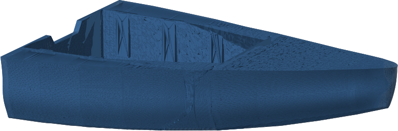
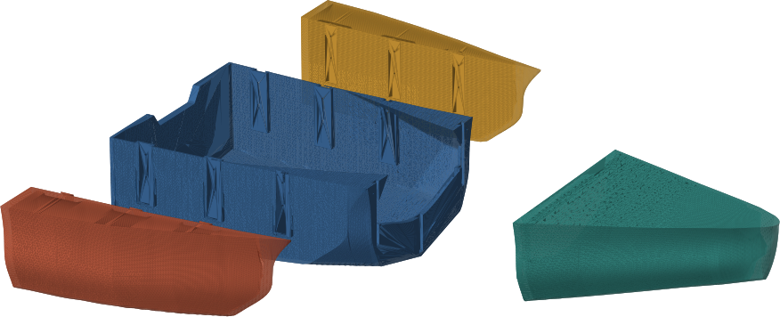
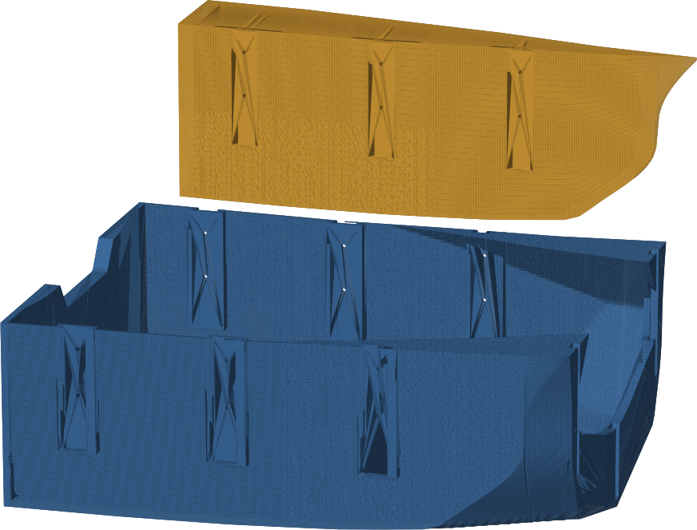
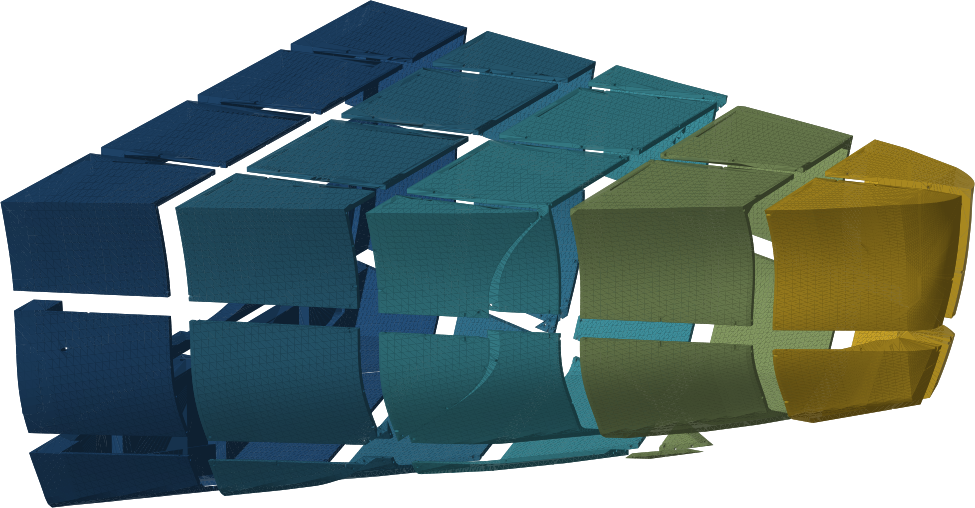

Parametric hull generator
Eight feet of planing hull, generated as four watertight pieces that bolt together through drop-in dovetail keys. Printed in ASA as a light core, then fiberglassed. Every dimension on this page comes out of the geometry.

What this is
This repository is a generator, not a set of drawings. dinghy_split.py
builds the hull lines, cuts the four pieces, hollows the bow, adds the dovetail keys, drills the
bolt holes, verifies every mesh, and exports full-size and scale-model STLs.
Because the boat is parametric, the design constraints are readable as constants. The centre barge is 42 inches wide because that was the width that fits a car, and every other dimension follows from that decision rather than being drawn around it.
A centre barge, two sealed wedge pods, and a hollow bow that nests inside the cockpit.
Twelve wedge-to-centre and four bow-to-centre. Nothing structural sits below the water.
Every cut face carries them, so a chunk can only go back together one way.
The bow drops into the centre cockpit for transport, with that much room at its tightest.
The split
The pieces share the y = ±21 in vertical planes and a single interface station
at x = 60 in design. Each one closes as an independent manifold, so a failure in
one piece cannot open another.
The centre barge is a usable floating tub by itself. The wedges carry the original outboard bottom, spray rail, and gunwale, which is what lets the stern stay wide while the load stays narrow. Growing the wedges widens the transom without changing what travels.
For transport the bow drops into the cockpit and the two wedges flip together into one bundle. The wedges travel separately: placed beside the centre they would restore the full 61 in beam whichever way round they go.

| Piece | Size, real | Modelled mass | Role |
|---|---|---|---|
center | 54.0 × 41.4 × 21.9 in | 13.8 kg | Open barge from transom to split. Floats and carries load on its own. |
wedge_stbd | 53.8 × 11.7 × 19.0 in | 4.8 kg | Sealed buoyancy pod carrying the outer skin and beam. |
wedge_port | 53.8 × 11.7 × 19.0 in | 4.8 kg | Mirror of the starboard pod. |
bow | 43.9 × 37.8 × 22.8 in | 5.8 kg | Hollow nose with a domed aft storage opening. |
The bow is storage, not buoyancy. Its mesh is a clean manifold like a cup, but the storage mouth opens into the cockpit, so it floods if the boat is swamped. A sealable hatch is the alternative if that trade is ever revisited.
The joint
Each wedge carries three vertical drop-in keys. The flare faces sideways toward the pod, so the key slides down into its socket and then resists the pod pulling away. Two bolts at each key stop it lifting back out.
The bow uses the same idea rotated ninety degrees: three keys in its aft face, one low on the centreline inside the solid bottom bulkhead and one on each side. The keys stop forward separation and four bolts stop lift.
Sockets are grown by a 2.0 mm real gap on every mating face. That sounds loose until the glass is counted: both mating walls are exterior surfaces, both take 6 oz cloth, and that alone consumed the original 0.6 mm. Tongues take cloth; sockets take neat epoxy, because cloth only bridges a deep flared slot and traps air behind itself.

Loose is nearly free. The bolts do the clamping and the keys only capture the geometry, so clearance costs capture margin rather than strength. At 2.0 mm the remaining capture is 9.4 mm on the wedge keys and 5.5 mm on the smallest bow key. Do not scale this gap up for a scale model: the undercut shrinks with the model and a gap wider than the undercut lets the key lift straight out.
Printing it
No piece fits a printer, so slice_for_print.py cuts each one on an
axis-aligned grid sized to the bed, with 8 mm of margin, and drills printed ASA dowel holes
into every shared face. The chunks are numbered in print order, bottom layer first, so a chunk
only ever bonds to neighbours that already exist.
Cut faces are flat, which matters more than it sounds. orient_chunks.py stands
every chunk on whichever of its six cut faces prints best, taking support across the whole
boat from 29,604 cm² to 771 cm². Printed as cut, support would have consumed
more ASA than the boat.
The whole hull is roughly 280 printer-hours at the profile's 20 mm³/s volumetric cap. The longest single chunk is 6.1 hours and the median is 1.8, so nothing needs babysitting and a machine that fails costs one chunk.

Build specification
A single 0.5 mm perimeter over sparse gyroid weeps through its own layer lines. The printed shell exists to hold shape and act as a sandwich core; the laminate carries the load.
Wall targets are 7 mm for sides, topsides, decks and shells, and 14 mm for the centre cockpit sole, which is the wide unsupported panel that oil-cans on the plywood boat this replaces. Gyroid is specified rather than grid because the core's job is shear.
| Surface | Laminate | Areal mass |
|---|---|---|
| Exterior bottom | Two layers 6 oz plain weave, second at 45° | 0.8 kg/m² |
| Exterior topsides and deck | One layer 6 oz plain weave | 0.4 kg/m² |
| Centre cockpit interior | One layer 6 oz plain weave | 0.4 kg/m² |
| Sealed wedge and bow interiors | Bare | — |
One fabric covers the whole boat, chosen for wet-out and for drape over printed layer lines. For a beaching boat the recommendation is a local third strip or graphite along the keel and chines rather than a heavier laminate everywhere. The schedule assumes epoxy: the mat in 1708 is a polyester feature and does nothing for an epoxy layup.
The ASA-to-epoxy bond is the least forgiving joint on the boat. Abrade, solvent-wipe, and key every surface that will be glassed.
Getting started
Dependencies are not pinned. manifold3d supplies the boolean operations,
pymeshfix is the repair fallback, and rtree backs the spatial queries
that place dowels.
git clone https://github.com/AlexWynn-AM/boat-design
cd boat-design
uv venv
uv pip install numpy trimesh matplotlib manifold3d pymeshfix rtree
.venv/bin/python dinghy_split.py # four pieces + STLs + renders
.venv/bin/python slice_for_print.py # cut them into bed-sized chunks
.venv/bin/python orient_chunks.py # stand each chunk on its best cut faceEvery run re-verifies the geometry: watertightness at design and export scale, the bow drop-in sweep, the buoyancy-pod seal, and the height of every bolt above the derived waterline. The engineering notes describe what each check is for and why it exists, and the reference covers parameters and outputs.